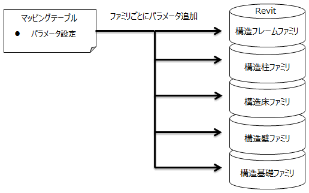

個別パラメータ追加機能は、任意のファミリにマッピングテーブルで設定されたパラメータを追加するコマンドである。
プロジェクトで使用する場合はファミリは構造柱・構造フレーム・構造壁・構造床・構造基礎ごとに選択可能とし、
ファミリエディタで使用する場合はファミリエディタで開いているファミリにマッピングテーブルで設定したパラメータを追加するものとする。
構造壁、構造床はシステムファミリのためファミリの選択は不可とし、マッピングテーブルで設定した壁または床のパラメータのみ追加可能である。
なお、構造壁・構造床のパラメータ追加はプロジェクトでのみ使用可能である。
|
|
 |
|